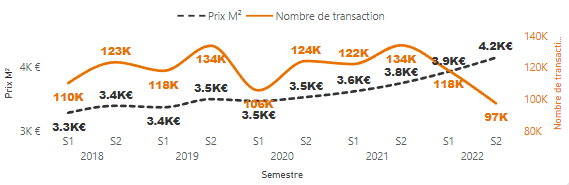
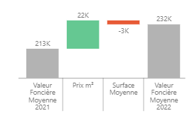
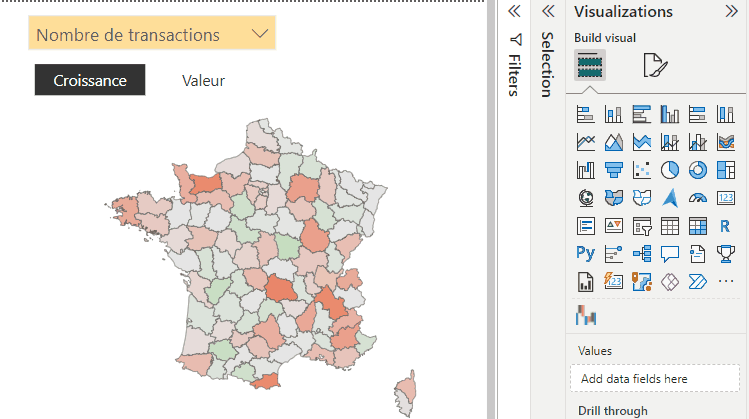

Commençons par quelque chose de simple et percutant : un graphique linéaire. Il répond à la question fondamentale de toute entreprise : "Est-ce que ça monte ou ça descend ?"
Ensuite, nous avons le camembert. Personnellement, je ne suis pas le plus grand fan de camembert d'un point de vue visuel, mais dans ce type de rapport, il prend tout son sens. Il ne sert pas seulement de représentation graphique, il est aussi un outil puissant pour filtrer et segmenter les données en toute simplicité, en plus de donner un aperçu de leur importance.
Ici nous observons une nette diminution des transactions alors que le prix au m² continue d'augmenter.
Maintenant, parlons du bridge. C'est là que ça devient vraiment intéressant. Le bridge permet d'expliquer les variations entre deux instances de données. Habituellement, on le trouve entre deux périodes, mais vous pouvez imaginer l'utiliser pour comparer deux zones géographiques différentes, par exemple.
Ici on explique comment la valeur foncière moyenne des biens vendus en france a évolué entre 2021 et 2022. Les acheteurs ont payé 22 000€ de plus parce que les prix au m² ont augmenté et pour contrebalancer ont concédé à l'équivalent de 3000 € de surface.
Les icones du bandeau de filtres sur la droite vous permettent de définir les dimensions principales :
- Le temps : Actuel et en comparaison
- Les caractéristiques du bien
- La zone géographique
En continuant, la carte est là pour un aspect ludique puisqu'elle est particulièrement interactive. Choisissez un KPI puis son mode de calcul pour colorez les départements.

Ici comment a évolué le prix du m² par département